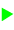

Behavior manager panel¶
What is the Behavior manager panel¶
The Behavior manager panel enables you to install, uninstall, play and stop behaviors on the robot you are connected to.

The table below describes the main parts of the Behavior manager panel:
| Part | Name | Allows you to ... |
|---|---|---|
| A | Toolbar | Manage the list of the Behaviors installed on the robot. |
| B | Behaviors | Know which behaviors are currently installed on the robot. The .currentChoregrapheBehavior is the current Behavior, temporarly
installed and immediately executed when you click the |
| C | Execution | Control the execution of each installed Behavior. |
| D | Default | Select the behaviors to play automatically at NAO startup. |
 Play button.
Play button.Behavior manager panel functionalities¶
Toolbar¶
| Button | Click on this button to ... |
|---|---|
| Open the behavior selected in the list of installed behaviors in Choregraphe. | |

|
Install the current opened behavior on your robot. |
| Uninstall the behavior selected in the list of installed behaviors. | |
| Stop all behaviors that are currently running on the robot. It is useful if you have executed a behavior at startup for example and you do not have control over it. |
Shortcuts¶
To install a Behavior directly from your computer:
Drag and drop a CRG file or the directory of a behavior into the Behavior manager panel.
Execution status¶
| Button | Means that the behavior is ... | Click on this button to ... |
|---|---|---|
|  | not running | Play the behavior |
| loading | ||
| running | Stop the behavior | |
| unloading |
Setting default behaviors¶
A default behavior is a behavior which is automatically played at NAO startup.
The checkbox column enables you to set a behavior as default.
| Button | Function |
|---|---|
| Not checked: the behavior is not set as default. | |
| Checked: the behavior is set as default. It will then be automatically executed at NAO startup. |
Note
You can also name a behavior .default to set it automatically as default behavior.
Warning
You can play and set as default several behaviors simultaneously. But the behaviors needs to be compatible. For example a behavior making NAO sit down and another making him walk are not compatible. Please set the resources of your boxes to avoid conflicts between simultaneous behaviors (see How to set resources of a box).